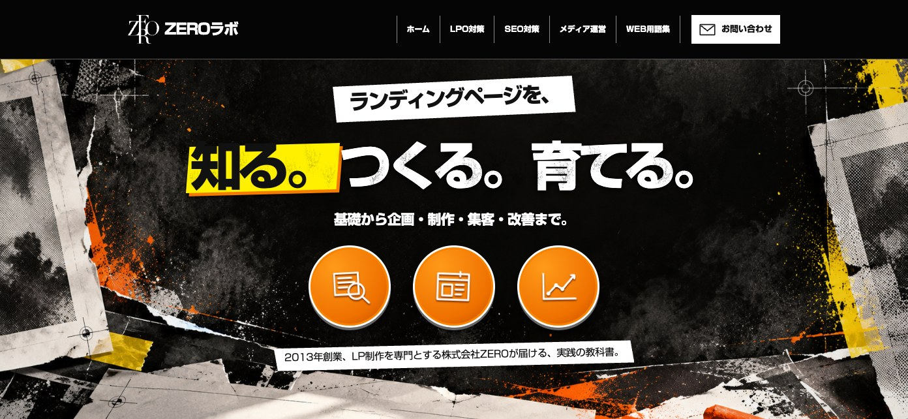
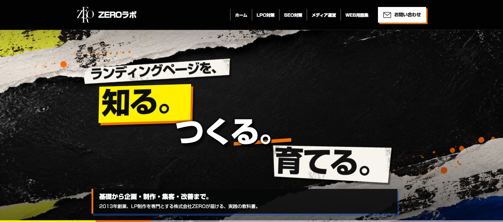
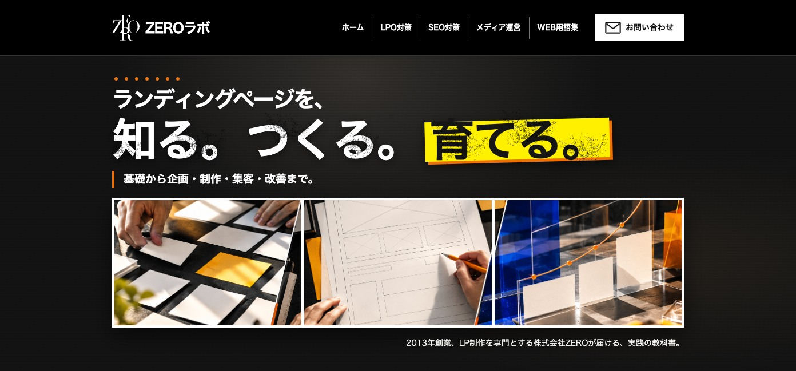

実際のZEROのLPにある、力強い文字、黄色のマーカー、斜めの紙片、オレンジの円を手掛かりに、構図を変えて3案作りました。各案のページでPCとスマホの表示を確認できます。

ZEROのLPの勢いを受け継ぐ、中央の作字と3つのオレンジ円。

LPの斜め帯とかすれを大胆に広げ、3つの動詞を画面全体で見せる。

ZEROのLPの強い文字と、調査・制作・改善を示す写真を組み合わせる。
比較用のデザインです。本番の ZEROラボ は変更していません。